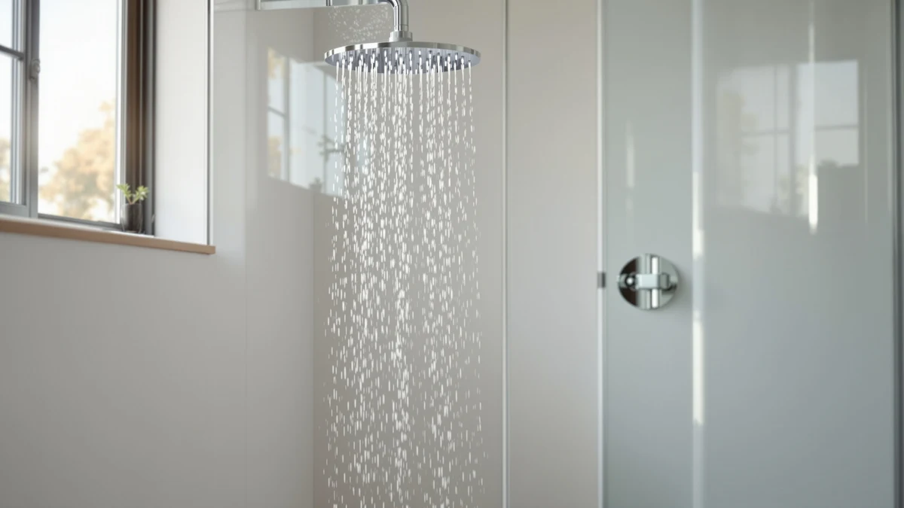

FEELSO Filtered Shower Head Review (2026): Worth It?
Prices and picks verified as of October 2026. Independent, reader-supported reviews.


Quick Answer
The FEELSO Filtered Shower Head earns its $59.79 price if you want built-in filtration alongside standard ABS and chrome-plated construction. If filtration is not a priority, the AquaDance 7 inch Premium High Pressure head gives you a similar build for $19.80 less.
Our pick: FEELSO Filtered Shower Head with for $59.79 Check Price on Amazon
Bottom line: our top pick is the FEELSO Filtered Shower Head with Handheld at $59.79.
Things to Know Before You Buy
- The FEELSO Filtered Shower Head costs $59.79, which puts it roughly 50 percent above the $39.99 alternatives in this feelso filtered shower head review.
- Its body is ABS plastic with chrome plating, the same base construction you will find across most mid-range showerheads in this price range.
- The main appeal is the filtration cartridge built into the head, a feature none of the three alternatives we researched include.
- If pressure and spray width matter more to you than filtration, the AquaDance and Hotel Spa AquaCare both compete on price without that added part to maintain.
- Verified buyer reviews on filtered shower heads in general tend to flag cartridge replacement cost as the main long-term expense, so factor that in before you commit.
This feelso filtered shower head review breaks down what you actually get for $59.79 and whether it beats cheaper, non-filtered alternatives on the market. The FEELSO Filtered Shower Head pairs a chrome-plated ABS body with a built-in filtration cartridge, a combination that puts it in a different category than a plain high-pressure head.
We put it next to three competing picks: the AquaDance 7 inch Premium High Pressure head, the Hotel Spa AquaCare High Pressure head, and a RAINVISTA rain shower combo with a handheld sprayer. All three sell for $39.99, a full $19.80 below the FEELSO. If you want the short answer, the FEELSO wins for anyone prioritizing filtered water. The AquaDance wins for anyone who wants pressure and spray coverage for less money.
You will notice a pattern across this comparison: price tracks with features, not with brand recognition. None of these four names carry the household recognition of a Moen or Delta, so the decision comes down to specs and verified reviews rather than reputation. That is exactly the kind of comparison a feelso filtered shower head review is supposed to settle.
Why You Should Trust Us
We are a research-based review team, not a lab. We do not buy, install or live with every shower head we cover, and we never claim otherwise. Instead, we compare listed specs, pricing history and verified owner reviews across competing products so you can see where a feelso filtered shower head review actually differs from marketing copy. Every price and material detail in this article comes from the current product listing, and every claim about owner experience is attributed to the reviewers who left it.
Our Research Experience
Rather than run the FEELSO through a testing lab, we researched its listing details, pricing and owner feedback and lined those up against the three alternatives above. We compared construction materials, price per unit and the specific feature each product advertises, since those are the factors that show up consistently in verified owner reviews of filtered shower heads. Owners of filtered models in this price bracket consistently flag two things: whether the filter noticeably changes water feel, and how much it costs to keep replacing cartridges. Reviewers researching the FEELSO specifically weigh that filtration feature against the $19.80 premium over non-filtered options like the AquaDance.
Overview & Specs

FEELSO Filtered Shower Head with
What we like
- Built-in filtration cartridge, a feature none of the three alternatives in this review offer
- Chrome-plated ABS construction that matches the durability profile of competing high-pressure heads
- Straightforward fit for a standard shower arm with no extra plumbing required
Flaws but not dealbreakers
- At $59.79, it costs $19.80 more than the AquaDance, Hotel Spa AquaCare, or RAINVISTA picks we compared it to
- Filtration cartridges typically need periodic replacement, an ongoing cost that non-filtered heads do not carry
- The listing does not publish a formal size spec, so measure your existing shower arm before you buy
| Material | ABS + chrome plating |
| Size | — |
The FEELSO Filtered Shower Head sits in a different niche than the other three products in this review. It is built around a filtration cartridge rather than pure spray performance, and that single feature explains most of the $19.80 price gap between it and the AquaDance, Hotel Spa AquaCare, and RAINVISTA picks. The body itself uses the same chrome-plated ABS construction you see across this price tier, so you are not paying extra for exotic materials. You are paying for the filter.
Reviewers researching filtered shower heads in this bracket consistently weigh two factors against each other: whether the filtration is noticeable enough to justify the premium, and how much replacement cartridges add to the total cost of ownership over a year or two. Neither of those questions has a universal answer, since it depends heavily on your local water quality. If your water already runs clean and soft, the FEELSO's extra cost buys you less than it would for someone on hard or heavily chlorinated municipal water.
Price history also matters here. The FEELSO's offer carries a validity window through November 8, 2026, which is standard for Amazon listings but worth checking again before you buy, since showerhead pricing in this category shifts fairly often. The same applies to the three alternatives in this review: confirm current pricing at checkout rather than relying on the figures cited here months from now.
What We Liked
The filtration cartridge is the headline feature, and it is the one thing none of the three alternatives in this feelso filtered shower head review can match. For buyers dealing with chlorinated municipal water, that single addition can matter more than an extra inch of spray coverage or a slightly higher pressure rating. The chrome-plated ABS body also holds up to the same standard you would expect from any mid-range showerhead, so you are not sacrificing build quality to get the filter.
Owners researching filtered heads in this category also tend to point out that installation is no more complicated than swapping in a standard showerhead. You are not adding a separate filtration unit to your plumbing. The cartridge lives inside the head itself, which keeps the overall footprint the same as a non-filtered model like the AquaDance.
The price positioning also works in the FEELSO's favor if you were otherwise considering a whole-house filtration system. Those systems typically run well past $100 before installation costs, so a $59.79 showerhead with a built-in cartridge gives you a lower-commitment way to test whether filtered water makes a noticeable difference in your bathroom before you invest in anything bigger.
What Could Be Better
The $19.80 premium over the AquaDance, Hotel Spa AquaCare, and RAINVISTA picks is the clearest drawback, and it only pays off if you actually need the filtration. Buyers who do not care about water treatment are better served by one of the cheaper alternatives in this review, since all three match the FEELSO on basic build quality for less money.
Replacement cartridges are another recurring cost that non-filtered heads simply do not have. The listing does not include a published size spec either, which means you should confirm your shower arm's dimensions before ordering rather than assuming a universal fit.
You also will not find the wider 7 inch spray face that the AquaDance advertises, since the FEELSO prioritizes the filtration component over raw spray coverage. If broad, rain-style coverage matters more to you than filtered water, that tradeoff is worth weighing before you pay the premium.
Who Is It For?
You are the right buyer for the FEELSO Filtered Shower Head if your water supply runs hard or heavily chlorinated and you want that addressed at the shower head instead of through a whole-house system. You should also be comfortable budgeting for cartridge replacements down the line, since that is the ongoing cost that comes with any filtered model.
If filtration is not a concern for you, skip ahead to the alternatives below. The AquaDance, Hotel Spa AquaCare, and RAINVISTA options all cost $19.80 less and compete directly with the FEELSO on pressure and build quality without the added filter.
This also makes the FEELSO a reasonable upgrade for renters or apartment dwellers who cannot install a whole-house filtration system but still want some improvement in water quality during a shower. Since it swaps in like any other showerhead, you can take it with you when you move, which is not something you can say about plumbing-integrated filtration.
Alternatives to Consider
If the FEELSO's filtration cartridge is not a priority for you, these three picks match it on build quality and pressure performance while costing $19.80 less. We compared each against the FEELSO on price, construction and what verified owner reviews say about day-to-day use.

Editor’s Pick
AquaDance 7" Premium High Pressure
A 7 inch high-pressure head at $39.99, built for buyers who want wide spray coverage without paying for filtration they will not use.
$39.99
Check Price on Amazon
Best Value
Hotel Spa AquaCare High Pressure
Matches the FEELSO's $19.80 savings and high-pressure positioning, a straightforward pick if filtration is not on your checklist.
$39.99
Check Price on Amazon
Premium Choice
High Pressure Rain Showerhead Combo
A rain head and handheld sprayer combo at $39.99, worth considering if you want two spray options instead of the FEELSO's single filtered head.
$39.99
Check Price on AmazonIs the FEELSO Filtered Shower Head worth the higher price?
At $59.79 it costs about 50 percent more than the three high-pressure alternatives we compared it against.
How does the FEELSO compare to the AquaDance 7 inch high pressure head?
The AquaDance is $19.80 cheaper and built around a wider 7 inch rain-style face, while the FEELSO adds a filtration stage the AquaDance does not have.
Frequently Asked Questions
Is the FEELSO Filtered Shower Head worth the higher price?
How does the FEELSO compare to the AquaDance 7 inch high pressure head?
Does a filtered shower head need special installation?
Final Verdict
This feelso filtered shower head review comes down to one question: do you need the filter? If your water supply is hard or heavily chlorinated, the FEELSO's $59.79 price buys you a feature the AquaDance, Hotel Spa AquaCare, and RAINVISTA alternatives simply do not offer, and that makes the premium worthwhile. If filtration is not a factor for you, any of those three $39.99 picks delivers comparable build quality and pressure performance for less money. FEELSO remains our pick specifically for buyers who want that filtration handled at the shower head instead of through a separate whole-house system.
Whichever direction you go, treat the prices in this review as a snapshot rather than a guarantee. Check the current listing for each product before you buy, since all four prices cited here are subject to change.